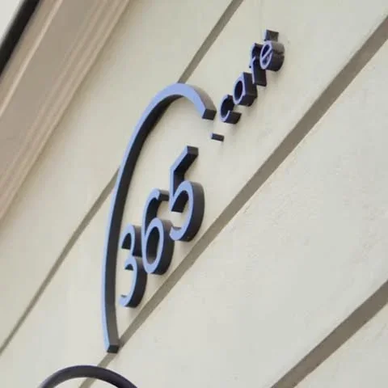
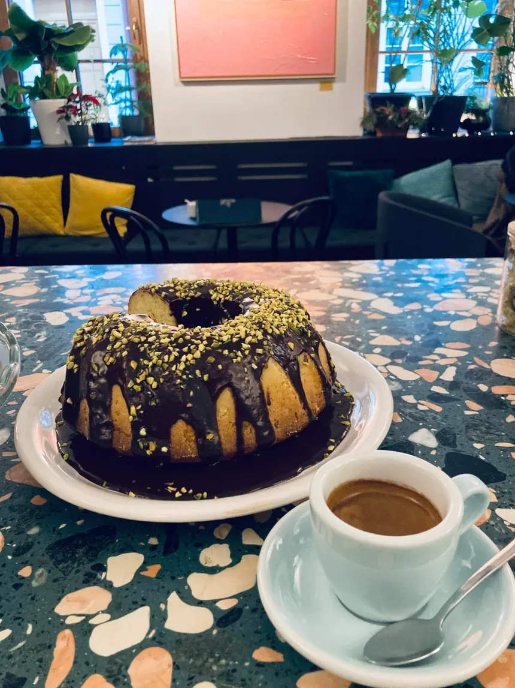
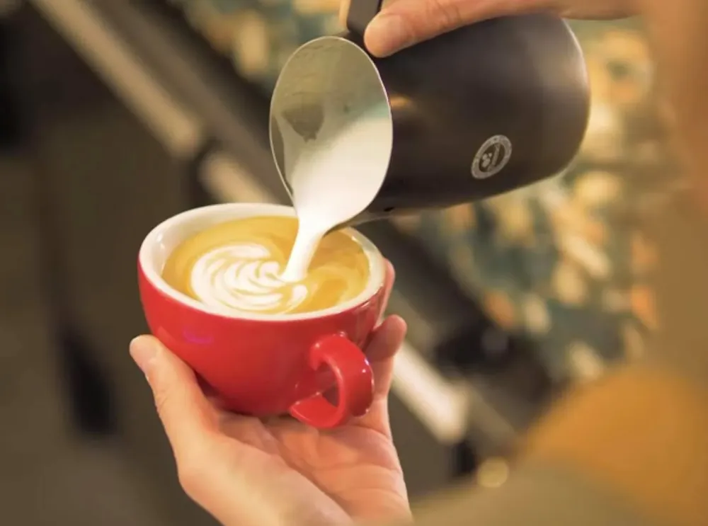
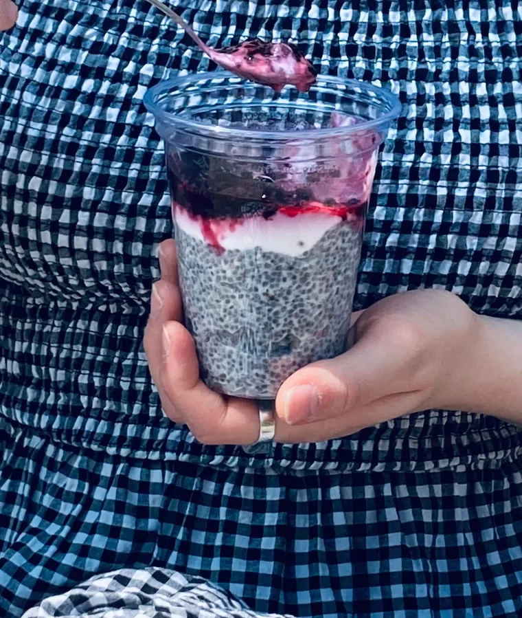

Lazovná 5 · Banská Bystrica · kaviareň + coworking
Káva, pracovný stôl a detská hernička blízko námestia.
365.labb je coworkingové komunitné centrum, ktoré má slúžiť v prospech mesta Banská Bystrica a jeho obyvateľov.
— úvod FB stránky 365.labb, súčasťou je aj café labb
Kaviareň: Po – Pi 8:00 – 19:00
Po – Pi 8:00 – 19:00 · podľa Google Máp

Rok 2026 v bodkách · 1 bodka = 1 deň
Dnes je 269. deň z 365
- Po – Pi, už za nami
- dnes
- Po – Pi, ešte len príde
- Raňajky podnikavcov 23. 2.
- sobota a nedeľa
268dní za nami
97dní pred nami
Plné bodky sú dni od pondelka do piatka — vtedy má kaviareň podľa Google Máp otvorené 8:00 – 19:00. Sviatočné hodiny zverejňujú na Facebooku.
Jeden dom na Lazovnej
Kaviareň, pracovňa aj herňa v jednom
Štyri vety, jeden zdroj: úvod FB stránky kaviarne 365.café_LABB.
Kaviareň
Príjemná kaviareň blízko námestia v pokojnom prostredí.
Coworking
Možnosť pracovať na počítači
v coworkingovom komunitnom centre 365.labb.Detská hernička
K dispozícii detská hernička
— pre najmenších návštevníkov kaviarne.Oslavy a podujatia
Miesto vhodné na oslavy a rôzne podujatia.
Nikdy neodmietni coffee break
Príspevok 365.labb na Facebooku, 16. 9. 2026



Počas roka
Raňajky podnikavcov, výstavy aj swapy
Čo sa na Lazovnej 5 deje popri káve — podľa verejných zdrojov. Aktuálne termíny zverejňuje 365.labb na Facebooku.
Aktuálny program na FacebookuRaňajky podnikavcov
zdroj: bbonline.skNeformálne dopoludňajšie stretnutie spojené s občerstvením a networkingom.
Ďalšie stretnutie zo série, vstup 10 € s občerstvením.- počas roka
Workshopy a meetingy
zdroj: centralslovakia.euPočas roka sa tu organizuje aj niekoľko workshopov a meetingov.
- počas roka
Výstavy obrazov a swapy oblečenia
zdroj: centralslovakia.euMedzi obľúbené podujatia patria výstavy obrazov a swapy oblečenia.
- podľa programu
Maľovanie s Arttime
Arttime uvádza Kaviareň 365.labb medzi miestami svojich maľovacích kurzov.
zdroj: arttime.sk - na dohodu
Vaša oslava
Kaviareň je podľa vlastných slov
miesto vhodné na oslavy a rôzne podujatia
. Termín a podmienky dohodnete telefonicky.
100%odporúča 365.labb na Facebooku
5 hodnotení
3,2tis.sledovateľov profilu 365.labb
na Facebooku
Starší profil kaviarne sa uzatvára: …všetky novinky… nájdete už iba na našom profile 365.labb, ktorého súčasťou je aj café labb…
Lazovná 5
974 01 Banská Bystrica · blízko námestia
- 365.labb0908 565 464coworking a komunitné centrum (FB 365.labb)
- 365.café0905 271 073kaviareň (FB stránka 365.café_LABB)
- Mapa
- Online
Otváracie hodiny kaviarne
| Pondelok | 8:00 – 19:00 |
| Utorok | 8:00 – 19:00 |
| Streda | 8:00 – 19:00 |
| Štvrtok | 8:00 – 19:00 |
| Piatok | 8:00 – 19:00 |
| Sobota | zatvorené |
| Nedeľa | zatvorené |
Podľa Google Máp. Počas sviatkov mávajú upravené hodiny — pred návštevou overte na Facebooku.